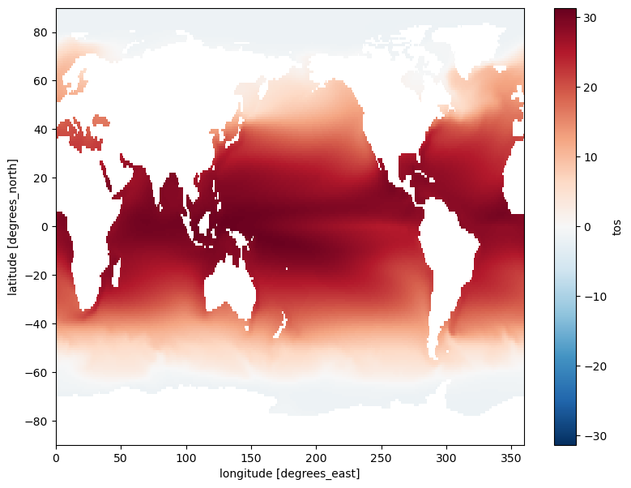
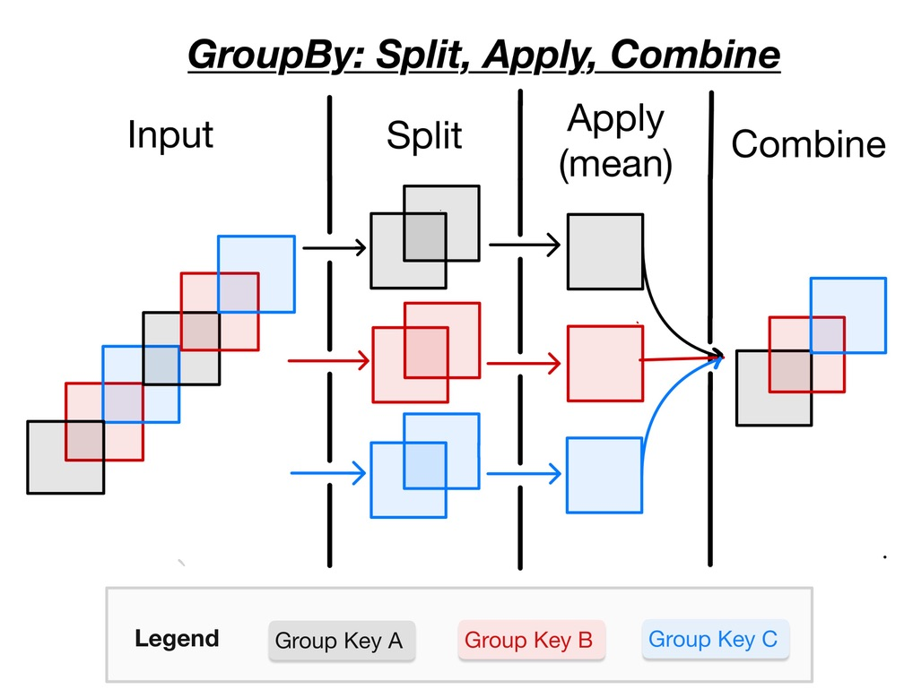
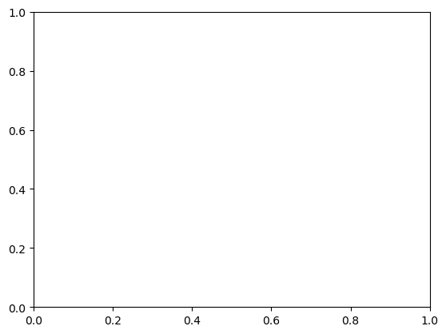

Computations and Masks with Xarray#
Overview#
In this notebook, we will:
Do basic arithmetic with DataArrays and Datasets
Perform aggregation (reduction) along one or multiple dimensions of a DataArray or Dataset
Compute climatology and anomaly using xarray’s “split-apply-combine” approach via
.groupby()Perform weighted reductions along one or multiple dimensions of a DataArray or Dataset
Provide an overview of masking data in xarray
Mask data using
.where()method
Prerequisites#
Concepts |
Importance |
Notes |
|---|---|---|
Introduction to Xarray |
Necessary |
Time to learn: 60 minutes
Imports#
import matplotlib.pyplot as plt
import numpy as np
import xarray as xr
from pythia_datasets import DATASETS
Let’s open the monthly sea surface temperature (SST) data from the Community Earth System Model v2 (CESM2), which is a Global Climate Model:
filepath = DATASETS.fetch('CESM2_sst_data.nc')
ds = xr.open_dataset(filepath)
ds
/Users/phil/mini310/envs/a301/lib/python3.13/site-packages/xarray/conventions.py:189: SerializationWarning: variable 'tos' has multiple fill values {np.float32(1e+20), np.float64(1e+20)} defined, decoding all values to NaN.
var = coder.decode(var, name=name)
<xarray.Dataset> Size: 47MB
Dimensions: (time: 180, d2: 2, lat: 180, lon: 360)
Coordinates:
* time (time) object 1kB 2000-01-15 12:00:00 ... 2014-12-15 12:00:00
* lat (lat) float64 1kB -89.5 -88.5 -87.5 -86.5 ... 86.5 87.5 88.5 89.5
* lon (lon) float64 3kB 0.5 1.5 2.5 3.5 4.5 ... 356.5 357.5 358.5 359.5
Dimensions without coordinates: d2
Data variables:
time_bnds (time, d2) object 3kB ...
lat_bnds (lat, d2) float64 3kB ...
lon_bnds (lon, d2) float64 6kB ...
tos (time, lat, lon) float32 47MB ...
Attributes: (12/45)
Conventions: CF-1.7 CMIP-6.2
activity_id: CMIP
branch_method: standard
branch_time_in_child: 674885.0
branch_time_in_parent: 219000.0
case_id: 972
... ...
sub_experiment_id: none
table_id: Omon
tracking_id: hdl:21.14100/2975ffd3-1d7b-47e3-961a-33f212ea4eb2
variable_id: tos
variant_info: CMIP6 20th century experiments (1850-2014) with C...
variant_label: r11i1p1f1Arithmetic Operations#
Arithmetic operations with a single DataArray automatically apply over all array values (like NumPy). This process is called vectorization. Let’s convert the air temperature from degrees Celsius to kelvins:
ds.tos + 273.15
<xarray.DataArray 'tos' (time: 180, lat: 180, lon: 360)> Size: 47MB
array([[[ nan, nan, nan, ..., nan, nan,
nan],
[ nan, nan, nan, ..., nan, nan,
nan],
[ nan, nan, nan, ..., nan, nan,
nan],
...,
[271.3552 , 271.3553 , 271.3554 , ..., 271.35495, 271.355 ,
271.3551 ],
[271.36005, 271.36014, 271.36023, ..., 271.35986, 271.35992,
271.36 ],
[271.36447, 271.36453, 271.3646 , ..., 271.3643 , 271.36435,
271.3644 ]],
[[ nan, nan, nan, ..., nan, nan,
nan],
[ nan, nan, nan, ..., nan, nan,
nan],
[ nan, nan, nan, ..., nan, nan,
nan],
...
[271.40677, 271.40674, 271.4067 , ..., 271.40695, 271.4069 ,
271.40683],
[271.41296, 271.41293, 271.41293, ..., 271.41306, 271.413 ,
271.41296],
[271.41772, 271.41772, 271.41772, ..., 271.41766, 271.4177 ,
271.4177 ]],
[[ nan, nan, nan, ..., nan, nan,
nan],
[ nan, nan, nan, ..., nan, nan,
nan],
[ nan, nan, nan, ..., nan, nan,
nan],
...,
[271.39386, 271.39383, 271.3938 , ..., 271.39407, 271.394 ,
271.39392],
[271.39935, 271.39932, 271.39932, ..., 271.39948, 271.39944,
271.39938],
[271.40372, 271.40372, 271.40375, ..., 271.4037 , 271.4037 ,
271.40372]]], shape=(180, 180, 360), dtype=float32)
Coordinates:
* time (time) object 1kB 2000-01-15 12:00:00 ... 2014-12-15 12:00:00
* lat (lat) float64 1kB -89.5 -88.5 -87.5 -86.5 ... 86.5 87.5 88.5 89.5
* lon (lon) float64 3kB 0.5 1.5 2.5 3.5 4.5 ... 356.5 357.5 358.5 359.5Lets’s square all values in tos:
ds.tos**2
<xarray.DataArray 'tos' (time: 180, lat: 180, lon: 360)> Size: 47MB
array([[[ nan, nan, nan, ..., nan, nan,
nan],
[ nan, nan, nan, ..., nan, nan,
nan],
[ nan, nan, nan, ..., nan, nan,
nan],
...,
[3.2213385, 3.2209656, 3.220537 , ..., 3.2221622, 3.221913 ,
3.2216525],
[3.203904 , 3.203617 , 3.2032912, ..., 3.2045207, 3.2043478,
3.2041442],
[3.1881146, 3.1879027, 3.1876712, ..., 3.188714 , 3.1885312,
3.1883302]],
[[ nan, nan, nan, ..., nan, nan,
nan],
[ nan, nan, nan, ..., nan, nan,
nan],
[ nan, nan, nan, ..., nan, nan,
nan],
...
[3.0388296, 3.0389647, 3.0390673, ..., 3.038165 , 3.0383828,
3.0386322],
[3.0173173, 3.0173445, 3.0173297, ..., 3.0169601, 3.0171173,
3.0172386],
[3.000791 , 3.0007784, 3.0007539, ..., 3.000933 , 3.000896 ,
3.0008452]],
[[ nan, nan, nan, ..., nan, nan,
nan],
[ nan, nan, nan, ..., nan, nan,
nan],
[ nan, nan, nan, ..., nan, nan,
nan],
...,
[3.0839543, 3.0841148, 3.0842566, ..., 3.0832636, 3.0834875,
3.0837412],
[3.064733 , 3.0648024, 3.0648358, ..., 3.0642793, 3.0644639,
3.0646174],
[3.0494578, 3.0494475, 3.0494263, ..., 3.049596 , 3.0495603,
3.0495107]]], shape=(180, 180, 360), dtype=float32)
Coordinates:
* time (time) object 1kB 2000-01-15 12:00:00 ... 2014-12-15 12:00:00
* lat (lat) float64 1kB -89.5 -88.5 -87.5 -86.5 ... 86.5 87.5 88.5 89.5
* lon (lon) float64 3kB 0.5 1.5 2.5 3.5 4.5 ... 356.5 357.5 358.5 359.5Aggregation Methods#
A very common step during data analysis is to summarize the data in question by computing aggregations like sum(), mean(), median(), min(), max() in which reduced data provide insight into the nature of large dataset. Let’s explore some of these aggregation methods.
Compute the mean:
ds.tos.mean()
<xarray.DataArray 'tos' ()> Size: 4B array(14.250171, dtype=float32)
Because we specified no dim argument the function was applied over all dimensions, computing the mean of every element of tos across time and space. It is possible to specify a dimension along which to compute an aggregation. For example, to calculate the mean in time for all locations, specify the time dimension as the dimension along which the mean should be calculated:
ds.tos.mean(dim='time').plot(size=7);

Compute the temporal min:
ds.tos.min(dim=['time'])
<xarray.DataArray 'tos' (lat: 180, lon: 360)> Size: 259kB
array([[ nan, nan, nan, ..., nan, nan,
nan],
[ nan, nan, nan, ..., nan, nan,
nan],
[ nan, nan, nan, ..., nan, nan,
nan],
...,
[-1.8083605, -1.8083031, -1.8082187, ..., -1.8083988, -1.8083944,
-1.8083915],
[-1.8025414, -1.8024837, -1.8024155, ..., -1.8026428, -1.8026177,
-1.8025846],
[-1.7984415, -1.7983989, -1.7983514, ..., -1.7985678, -1.7985296,
-1.7984871]], shape=(180, 360), dtype=float32)
Coordinates:
* lat (lat) float64 1kB -89.5 -88.5 -87.5 -86.5 ... 86.5 87.5 88.5 89.5
* lon (lon) float64 3kB 0.5 1.5 2.5 3.5 4.5 ... 356.5 357.5 358.5 359.5Compute the spatial sum:
ds.tos.sum(dim=['lat', 'lon'])
<xarray.DataArray 'tos' (time: 180)> Size: 720B
array([603767. , 607702.5 , 603976.5 , 599373.56, 595119.94, 595716.75,
598177.3 , 600670.6 , 597825.56, 591869. , 590507.7 , 597189.2 ,
605954.06, 609151. , 606868.9 , 602329.9 , 599465.75, 601205.5 ,
605144.4 , 608588.5 , 604046.9 , 598927.75, 597519.75, 603876.9 ,
612424.44, 615765.2 , 612615.44, 606310.6 , 602034.4 , 600784.9 ,
602013.5 , 603142.2 , 598850.9 , 591917.44, 589234.56, 596162.5 ,
602942.06, 607196.9 , 604928.2 , 601735.6 , 599011.8 , 599490.9 ,
600801.44, 602786.94, 598867.2 , 594081.8 , 593736.25, 598995.6 ,
607285.25, 611901.06, 609562.75, 603527.3 , 600215.4 , 601372.6 ,
604144.5 , 605376.75, 601256.2 , 595245.2 , 594002.06, 600490.4 ,
611878.6 , 616563. , 613050.8 , 605734. , 600808.75, 600898.06,
603930.56, 605644.7 , 599917.5 , 592048.06, 590082.8 , 596950.7 ,
607701.94, 610844.7 , 609509.6 , 603380.94, 599838.1 , 600334.25,
604386.6 , 607848.1 , 602155.2 , 594949.06, 593815.06, 598365.3 ,
608730.8 , 612056.5 , 609922.5 , 603077.1 , 600134.1 , 602821.2 ,
606152.75, 610257.8 , 604685.8 , 596858. , 592894.8 , 599944.9 ,
609764.44, 614610.75, 611434.75, 605606.4 , 603790.94, 605750.2 ,
609250.06, 612935.7 , 609645.06, 601706.4 , 598896.5 , 605349.75,
614671.8 , 618686.7 , 615895.2 , 609438.2 , 605399.56, 606126.75,
607942.3 , 609680.4 , 604814.25, 595841.94, 591908.44, 595638.7 ,
604798.94, 611327.1 , 609765.7 , 603727.56, 600970. , 602514. ,
606303.7 , 609225.25, 603724.3 , 595944.8 , 594477.4 , 597807.4 ,
607379.06, 611808.56, 610112.94, 607196.3 , 604733.06, 605488.25,
610048.3 , 612655.75, 608906.25, 602349.7 , 601754.2 , 609220.4 ,
619367.1 , 623783.2 , 619949.7 , 613369.06, 610190.8 , 611091.2 ,
614213.44, 615665.06, 611722.2 , 606259.56, 605970.2 , 611463.3 ,
619794.6 , 626036.5 , 623085.44, 616295.9 , 611886.3 , 611881.9 ,
614420.75, 616853.56, 610375.44, 603471.5 , 602108.25, 608094.3 ,
617450.7 , 623508.7 , 619830.2 , 612033.3 , 608737.2 , 610105.25,
613692.7 , 616360.44, 611735.4 , 606512.7 , 604249.44, 608777.44],
dtype=float32)
Coordinates:
* time (time) object 1kB 2000-01-15 12:00:00 ... 2014-12-15 12:00:00Compute the temporal median:
ds.tos.median(dim='time')
<xarray.DataArray 'tos' (lat: 180, lon: 360)> Size: 259kB
array([[ nan, nan, nan, ..., nan, nan,
nan],
[ nan, nan, nan, ..., nan, nan,
nan],
[ nan, nan, nan, ..., nan, nan,
nan],
...,
[-1.7648907, -1.7648032, -1.7647004, ..., -1.7650614, -1.7650102,
-1.7649589],
[-1.7590305, -1.7589546, -1.7588665, ..., -1.7591925, -1.7591486,
-1.759095 ],
[-1.7536805, -1.753602 , -1.7535168, ..., -1.753901 , -1.753833 ,
-1.7537591]], shape=(180, 360), dtype=float32)
Coordinates:
* lat (lat) float64 1kB -89.5 -88.5 -87.5 -86.5 ... 86.5 87.5 88.5 89.5
* lon (lon) float64 3kB 0.5 1.5 2.5 3.5 4.5 ... 356.5 357.5 358.5 359.5The following table summarizes some other built-in xarray aggregations:
Aggregation |
Description |
|---|---|
|
Total number of items |
|
Mean and median |
|
Minimum and maximum |
|
Standard deviation and variance |
|
Compute product of elements |
|
Compute sum of elements |
|
Find index of minimum and maximum value |
GroupBy: Split, Apply, Combine#
Simple aggregations can give useful summary of our dataset, but often we would prefer to aggregate conditionally on some coordinate labels or groups. Xarray provides the so-called groupby operation which enables the split-apply-combine workflow on xarray DataArrays and Datasets. The split-apply-combine operation is illustrated in this figure

This makes clear what the groupby accomplishes:
The split step involves breaking up and grouping an xarray Dataset or DataArray depending on the value of the specified group key.
The apply step involves computing some function, usually an aggregate, transformation, or filtering, within the individual groups.
The combine step merges the results of these operations into an output xarray Dataset or DataArray.
We are going to use groupby to remove the seasonal cycle (“climatology”) from our dataset. See the xarray groupby user guide for more examples of what groupby can take as an input.
First, let’s select a gridpoint closest to a specified lat-lon, and plot a time series of SST at that point. The annual cycle will be quite evident.
ds.tos.sel(lon=310, lat=50, method='nearest').plot();
---------------------------------------------------------------------------
ImportError Traceback (most recent call last)
Cell In[10], line 1
----> 1 ds.tos.sel(lon=310, lat=50, method='nearest').plot();
File ~/mini310/envs/a301/lib/python3.13/site-packages/xarray/plot/accessor.py:48, in DataArrayPlotAccessor.__call__(self, **kwargs)
46 @functools.wraps(dataarray_plot.plot, assigned=("__doc__", "__annotations__"))
47 def __call__(self, **kwargs) -> Any:
---> 48 return dataarray_plot.plot(self._da, **kwargs)
File ~/mini310/envs/a301/lib/python3.13/site-packages/xarray/plot/dataarray_plot.py:310, in plot(darray, row, col, col_wrap, ax, hue, subplot_kws, **kwargs)
306 plotfunc = hist
308 kwargs["ax"] = ax
--> 310 return plotfunc(darray, **kwargs)
File ~/mini310/envs/a301/lib/python3.13/site-packages/xarray/plot/dataarray_plot.py:510, in line(darray, row, col, figsize, aspect, size, ax, hue, x, y, xincrease, yincrease, xscale, yscale, xticks, yticks, xlim, ylim, add_legend, _labels, *args, **kwargs)
507 xlabel = label_from_attrs(xplt, extra=x_suffix)
508 ylabel = label_from_attrs(yplt, extra=y_suffix)
--> 510 _ensure_plottable(xplt_val, yplt_val)
512 primitive = ax.plot(xplt_val, yplt_val, *args, **kwargs)
514 if _labels:
File ~/mini310/envs/a301/lib/python3.13/site-packages/xarray/plot/utils.py:721, in _ensure_plottable(*args)
719 import nc_time_axis # noqa: F401
720 else:
--> 721 raise ImportError(
722 "Plotting of arrays of cftime.datetime "
723 "objects or arrays indexed by "
724 "cftime.datetime objects requires the "
725 "optional `nc-time-axis` (v1.2.0 or later) "
726 "package."
727 )
ImportError: Plotting of arrays of cftime.datetime objects or arrays indexed by cftime.datetime objects requires the optional `nc-time-axis` (v1.2.0 or later) package.

Split#
Let’s group data by month, i.e. all Januaries in one group, all Februaries in one group, etc.
ds.tos.groupby(ds.time.dt.month)
<DataArrayGroupBy, grouped over 1 grouper(s), 12 groups in total:
'month': 12/12 groups present with labels 1, 2, 3, 4, 5, 6, 7, 8, 9, 10, 11, 12>
In the above code, we are using the .dt DatetimeAccessor to extract specific components of dates/times in our time coordinate dimension. For example, we can extract the year with ds.time.dt.year. See also the equivalent Pandas documentation.